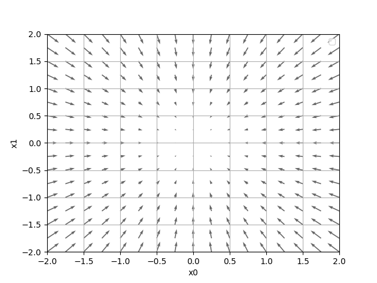

梯度下降法

1. 梯度
若要一次計算出\(x_0\)與\(x_1\)的偏微分，可以計算\((\frac{\partial{f}}{\partial{x_0}},\frac{\partial{f}}{\partial{x_1}})\)，這種方式也叫梯度（gradient），對應之計算程式碼如下：
1: # f(x0, x1) = x0**2 + x1**2の勾配図を描くサンプルコード実行 2: # cat gradient_2d_save.py 3: 4: # coding: utf-8 5: # cf.http://d.hatena.ne.jp/white_wheels/20100327/p3 6: import numpy as np 7: import matplotlib.pylab as plt 8: plt.switch_backend('agg') 9: from mpl_toolkits.mplot3d import Axes3D 10: 11: def _numerical_gradient_no_batch(f, x): 12: h = 1e-4 # 0.0001 13: grad = np.zeros_like(x) # 產生和x相同形狀、內容均為0的陣列 14: 15: for idx in range(x.size): 16: tmp_val = x[idx] 17: # 計算f(x+h) 18: x[idx] = float(tmp_val) + h 19: fxh1 = f(x) # f(x+h) 20: x[idx] = tmp_val - h 21: fxh2 = f(x) # f(x-h) 22: grad[idx] = (fxh1 - fxh2) / (2*h) 23: 24: x[idx] = tmp_val # 恢復原值 25: return grad 26: 27: def numerical_gradient(f, X): 28: if X.ndim == 1: 29: return _numerical_gradient_no_batch(f, X) 30: else: 31: grad = np.zeros_like(X) 32: for idx, x in enumerate(X): 33: grad[idx] = _numerical_gradient_no_batch(f, x) 34: return grad 35: 36: def function_2(x): 37: if x.ndim == 1: 38: return np.sum(x**2) 39: else: 40: return np.sum(x**2, axis=1) 41: 42: def tangent_line(f, x): 43: d = numerical_gradient(f, x) 44: print(d) 45: y = f(x) - d*x 46: return lambda t: d*t + y 47: 48: x0 = np.arange(-2, 2.5, 0.25) 49: x1 = np.arange(-2, 2.5, 0.25) 50: X, Y = np.meshgrid(x0, x1) 51: X = X.flatten() 52: Y = Y.flatten() 53: grad = numerical_gradient(function_2, np.array([X, Y]) ) 54: plt.figure() 55: plt.quiver(X, Y, -grad[0], -grad[1], angles="xy",color="#666666") 56: #,headwidth=10,scale=40,color="#444444") 57: plt.xlim([-2, 2]) 58: plt.ylim([-2, 2]) 59: plt.xlabel('x0') 60: plt.ylabel('x1') 61: plt.grid() 62: plt.legend() 63: plt.draw() 64: #plt.show() 65: plt.savefig('gradient_2d.png') 66: print(numerical_gradient(function_2, np.array([3.0, 4.0]))) 67: print(numerical_gradient(function_2, np.array([0.0, 2.0]))) 68: print(numerical_gradient(function_2, np.array([3.0, 0.0])))
上述程式碼中，函數 numerical_gradient 以函數 function_2 以及陣列 x 為參數（程式碼第27行），針對陣列 x 的各元素計算數值微分，計算(3, 4)、(0, 2)、(3, 0)各點的梯度結果如下：
[6. 8.] [0. 4.] [6. 0.]
如圖1所示，所謂梯度，指的是函數\(f(x0,x1)\)的「最低位置（最小值）」，這裡的箭頭就如同羅盤，離「最低位置」越遠，箭頭越大。雖然圖1中箭頭所指為最低位置，但實際上不一定如此，梯度所指其實為各點之最低方向，其數學意義為：函數值減少最多的方向。

Figure 1: \(f(x_0,x_1)=x_0^2+x_1^2\)之梯度圖形
1.1. 梯度法
神經網路的學習過程在於尋找最佳參數，這裡的意義也可說成：尋找可以讓損失函數為最小值的參數，以梯度來達成此目的的方法即為梯度法（gradient method），而最小值稱為鞍點（saddle point），鞍點是相對意義的存在，即，由某些方向看來是極大，但由其他方向看來為極小值，梯度法目的在找出梯度為 0 的位置，但不見的是極小值，當函數形成複雜扭曲形狀時，可能進入幾乎平坦而無法繼繼續學習的狀態，稱為「停滯期」。
由此觀之，梯度法的精神即在於「朝著正確的方向前進一段距離、重新計算出正確方向、再前進一段距離….」。同樣的方法可以用來找出極小值（此時為梯度下降法，gradient descent method)，也能用來找出極大值（梯度上升法，gradient ascent method）。
若以公式來顯示梯度法，其結果如公式\eqref{org666ad3a}所示：
公式\eqref{org666ad3a}中的\(\eta\)代表更新的量，在神經網路中稱為學習率（learning rate），即，在一次學習中，要學習多少，要更新多少參數。公式\eqref{org666ad3a}為一次更新的內容，或者，我們也可以看成「每次朝著正確方向前進的距離」。以 Python 實作的梯度下降法如下：
1: import numpy as np 2: def numerical_gradient(f, x): #f 為要進行最佳化的目標函數 3: h = 1e-4 # 0.0001 4: grad = np.zeros_like(x) 5: for idx in range(x.size): 6: tmp_val = x[idx] 7: x[idx] = tmp_val + h # 計算f(x+h) 8: fxh1 = f(x) 9: x[idx] = tmp_val - h # 計算(x-h) 10: fxh2 = f(x) 11: grad[idx] = (fxh1 - fxh2) / (2*h) 12: x[idx] = tmp_val # restore original value 13: return grad 14: def gradient_descent(f, init_x, lr=0.01, step_num=100): 15: x = init_x 16: for i in range(step_num): 17: grad = numerical_gradient(f, x) 18: x -= lr * grad 19: return x 20: def function_2(x): 21: return x[0]**2 + x[1]**2 22: init_x = np.array([-3.0, 4.0]) 23: print(gradient_descent(function_2, init_x=init_x, lr=0.1, step_num=100)) 24: init_x = np.array([20.0, -30.0]) 25: print(gradient_descent(function_2, init_x=init_x, lr=0.1, step_num=100)) 26: init_x = np.array([220.0, -330.0]) 27: print(gradient_descent(function_2, init_x=init_x, lr=0.1, step_num=100)) 28: print("學習率設為10.0") 29: init_x = np.array([-3.0, 4.0]) 30: print(gradient_descent(function_2, init_x=init_x, lr=10.0, step_num=100)) 31: print("學習率設為1e-10") 32: init_x = np.array([-3.0, 4.0]) 33: print(gradient_descent(function_2, init_x=init_x, lr=1e-10, step_num=100))
[-6.11110793e-10 8.14814391e-10] [ 4.07407195e-09 -6.11110793e-09] [ 4.48147915e-08 -6.72221872e-08] 學習率設為 10.0 [-2.58983747e+13 -1.29524862e+12] 學習率設為 1e-10 [-2.99999994 3.99999992]
上述程式中，init_x 為預設值、lr 代表 learning rate、step_num 為重複次數，梯度由 numerical_gradient(f,x)計算，程式執行結果為函數\(f(x_0,x_1)=x_0^2+x_1^2\)的最小值，預設值為\(x_0=-3,x_1=4\)，以梯度法求最小值，最後結果為(-6.1e-10,-8.1-10)，趨近於真實答案(0,0)，即使以其他預設值做為起點，所找到的最小值仍趨近正確答案, 而學習率太大或太小均無法得到良好的結果（學習率太大則會往大數值擴散；學習率太小則幾乎不更新就結束）。至於學習率這種依靠人工進行設定的值稱為超參數（hyperparameter），其最佳設定有賴以各種測試取得。至於梯度法的學習流程則如圖2所示。
1: # cat gradient_method_save.py 2: # coding: utf-8 3: import numpy as np 4: import matplotlib.pylab as plt 5: plt.switch_backend('agg') 6: def numerical_gradient(f, x): #f 為要進行最佳化的目標函數 7: h = 1e-4 # 0.0001 8: grad = np.zeros_like(x) 9: for idx in range(x.size): 10: tmp_val = x[idx] 11: x[idx] = tmp_val + h # 計算f(x+h) 12: fxh1 = f(x) 13: x[idx] = tmp_val - h # 計算(x-h) 14: fxh2 = f(x) 15: grad[idx] = (fxh1 - fxh2) / (2*h) 16: x[idx] = tmp_val # restore original value 17: return grad 18: 19: 20: def gradient_descent(f, init_x, lr=0.01, step_num=100): 21: x = init_x 22: x_history = [] 23: 24: for i in range(step_num): 25: x_history.append( x.copy() ) 26: 27: grad = numerical_gradient(f, x) 28: x -= lr * grad 29: 30: return x, np.array(x_history) 31: 32: 33: def function_2(x): 34: return x[0]**2 + x[1]**2 35: 36: init_x = np.array([-3.0, 4.0]) 37: 38: lr = 0.1 39: step_num = 20 40: x, x_history = gradient_descent(function_2, init_x, lr=lr, step_num=step_num) 41: 42: plt.plot( [-5, 5], [0,0], '--b') 43: plt.plot( [0,0], [-5, 5], '--b') 44: plt.plot(x_history[:,0], x_history[:,1], 'o') 45: 46: plt.xlim(-3.5, 3.5) 47: plt.ylim(-4.5, 4.5) 48: plt.xlabel("X0") 49: plt.ylabel("X1") 50: #plt.show() 51: plt.savefig('gradient_process_method.png') 52: #return "gradient_process_method.png"

Figure 2: \(f(x_0,x_1)=x_0^2+x_1^2\)的梯度法更新過程
1.2. 神經網路的梯度
神經網路的梯度指與權重參數有關的損失函數梯度，若有個形狀為\(2*3\)、權重為\(W\)的神經網路，以\(L\)代表損失函數，則可以用\(\frac{\partial{L}}{\partial{W}}\)來表示梯度，其公式如下：
\(\frac{\partial{L}}{\partial{W}}\)的各元素係由該元素的偏微分構成，如\(\frac{\partial{L}}{\partial{w_{11}}}\)即為在略改變\(w_{11}\)後損失函數所造成的變化，神經網路計算梯度的方式如下：
1: import numpy as np 2: def softmax(x): 3: if x.ndim == 2: 4: x = x.T 5: x = x - np.max(x, axis=0) 6: y = np.exp(x) / np.sum(np.exp(x), axis=0) 7: return y.T 8: 9: x = x - np.max(x) # 溢出对策 10: return np.exp(x) / np.sum(np.exp(x)) 11: 12: def cross_entropy_error(y, t): 13: if y.ndim == 1: 14: t = t.reshape(1, t.size) 15: y = y.reshape(1, y.size) 16: 17: # 监督数据是one-hot-vector的情况下，转换为正确解标签的索引 18: if t.size == y.size: 19: t = t.argmax(axis=1) 20: 21: batch_size = y.shape[0] 22: return -np.sum(np.log(y[np.arange(batch_size), t] + 1e-7)) / batch_size 23: 24: def _numerical_gradient_no_batch(f, x): 25: h = 1e-4 # 0.0001 26: grad = np.zeros_like(x) # 產生和x相同形狀、內容均為0的陣列 27: 28: for idx in range(x.size): 29: tmp_val = x[idx] 30: # 計算f(x+h) 31: x[idx] = float(tmp_val) + h 32: fxh1 = f(x) # f(x+h) 33: x[idx] = tmp_val - h 34: fxh2 = f(x) # f(x-h) 35: grad[idx] = (fxh1 - fxh2) / (2*h) 36: 37: x[idx] = tmp_val # 恢復原值 38: return grad 39: 40: def numerical_gradient(f, X): 41: if X.ndim == 1: 42: return _numerical_gradient_no_batch(f, X) 43: else: 44: grad = np.zeros_like(X) 45: for idx, x in enumerate(X): 46: grad[idx] = _numerical_gradient_no_batch(f, x) 47: return grad 48: 49: class simpleNet: 50: def __init__(self): 51: self.W = np.random.randn(2, 3) #以常態分佈初始化權重分配 52: 53: def predict(self, x): 54: return np.dot(x, self.W) 55: 56: def loss(self, x, t): 57: z = self.predict(x) 58: y = softmax(z) 59: loss = cross_entropy_error(y, t) 60: return loss 61: 62: net = simpleNet() 63: print(net.W) 64: x = np.array([0.6, 0.9]) 65: p = net.predict(x) 66: print(p) 67: t = np.array([0, 0, 1]) 68: print(net.loss(x, t)) 69: print("=========================") 70: f = lambda w: net.loss(x,t) 71: dW = numerical_gradient(f, net.W) 72: print(dW)
[[-0.17058278 0.11372612 -1.53368818] [ 0.19931583 -0.60202593 0.07473724]] [ 0.07703458 -0.47358766 -0.85294939] 1.6086010849717751 ========================= [[ 0.30439054 0.17550882 -0.47989936] [ 0.45658581 0.26326323 -0.71984904]]
simpleNet 以一個\(2*3\)的陣列做為權重參數 W，x 為輸入資料，t為正確答案標籤，此處我們希望針對 loss 函數進行梯度法取得最小值，所以定義一個函數 f，代入 x 及 t 傳回損失函數，然後將函數 f 做為參數傳給 numerical_gradient 進行梯度下降運算，由運算結果 dW 的陣列內容可以看出，每增加一個\(h\)，\(w_{11}\)就增加 0.45、而\(w_{23}\)則下降 0.72。由此看來，為了要減少損失函數，應該持續增加\(w_{11}\)、減少\(w{23}\)，而且，\(w{23}\)的貢獻最大。
2. 梯度下降法
3. 學習演算法
至此，神經網路的學習步驟大致如下：
- 小批次: 即從訓練資料中所隨機挑選部份數據
- 計算梯度: 然後朝著「減少小批次損失函數」為目標前進
- 更新參數: 每前進一步，就更新參數
- 回到步驟 1
上述作法稱之為「準確率梯度下降法(stochastic gradient descent)」，意味著「針對所選出的資料進行梯度下降」，一般以 SGD 為名。